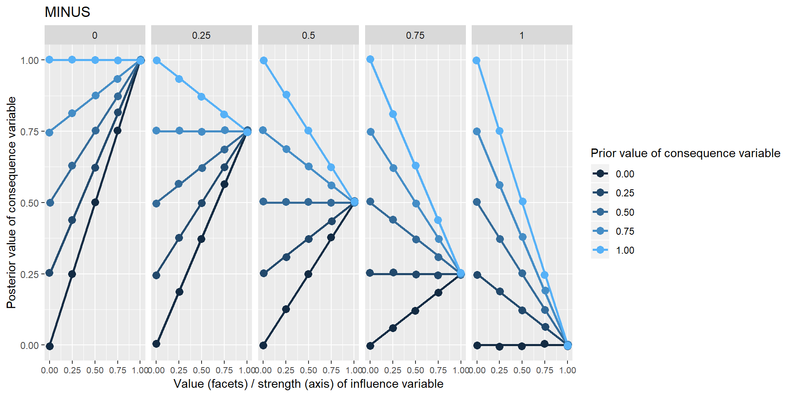
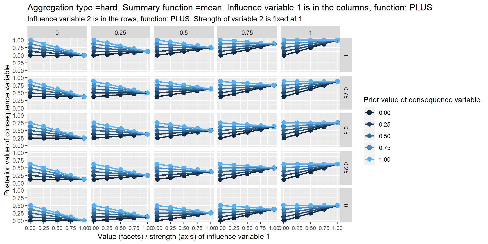
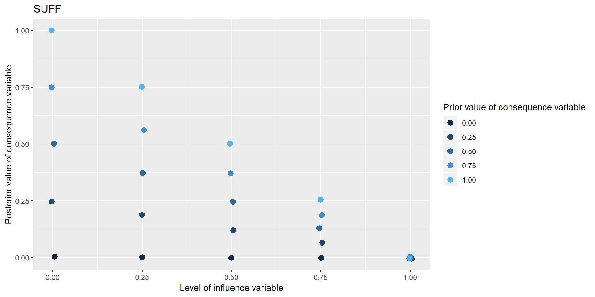

Section 29 Coding influences – individual and in combination
29.1 The problem
So far, we have talked generically about the “content” of a causal link and about the function which is encoded. But we haven’t looked much at what those contents or functions might look like. I claim that a vast range of the functions which we are likely to want to code can in fact be coded using quite a small set of functions from (packages of) lo/hi influence variables to lo/hi consequence variables.
How can we possibly have enough symbols to write down all the possible different ways one or more variables can influence another? Even with variables which have rational numbers as their values and even with the strongest linear assumptions there are uncountably many such functions and combinations: exponential, interacting, chaotic, and so on.
In the most basic situation, we have information about some unspecified influence of one variable on another.
The influence is hardly ever completely unspecified. We might hear things like this:
- You can’t have E without B
- Mostly, Bs are Bs
- More of B means more of E
- B happened and then E happened
- E was poor because of B
- B is good for E
- B reduces E
- B is quite good for E
- B doesn’t have much effect on E
More generally there is more than one influencing variable
- B and C combine synergistically to influence E
- B and C have contrary influences on E
- You can’t have high performance without both high effort and high ability.
and so on. On the other hand, we are unlikely to hear a neatly-specified function either. How to encode this information?
Also, (a related problem): how to make sense of any kind of qualifying information like strength, trust, confidence, reliability, probability, class membership etc. Obviously these do not all mean the same thing, but we could at least start by looking at how to implement even some generic version.
29.2 Breaking down the problem
What we will do is restrict and reduce the problem as follows:
All variables are lo/hi variables, taking values between 0 and 1. This also includes false/true variables as a special case, with values just 0 or 1.
We will deal only with symmetrical or commutative functions in the sense that if \(E = f(B,C)\) then also \(E = f(C,B)\). For example, this is true for addition but not for division. [am I sure about this?? we surely want to be able to code that one variable is a supressor in a package]
We will specify a limited (as small as possible) bunch of functions to encode causal information which are all defined on the same range, so they all tell you how to go from values between 0 and 1 to produce another value between 0 and 1. These are functions such as AND, MULTIPLY etc chosen so that in combination with the attributes strength and contour, we can code a good proportion of the range of the functional relationships we are likely to encounter.
This also means that rather than defining a function like NECESSARY specially for the case of just binary 0/1 variables, we will straight away provide a generalisation which can also deal with intermediate values.
We will also try to provide functions (like MULTIPLY) which can be defined all at once for any number of influence variables. Just as with ordinary arithmetic we don’t need to provide separate definitions for the “SUM” in \(SUM(b,c)\) and in \(SUM(b,c,d)\) just because there are different numbers of arguments.
Taken together this means in principle we can combine and overlay possibly conflicting information from the same or different sources in the same functional format.
Later, we will code the “contour” of individual influence e.g. when B increases, E increases, but more steeply for smaller values of B.
Later, we will code the “strength” of individual or multiple influences, e.g. when C and B together tell you something about E, but not much
29.3 Some “mono functions”: functions with a single influence variable
Some of these functions will probably seem unrealistic; as we have not yet introduced the idea of strength, most of them completely determine the consequence variable – a situation which we of course rarely see in social science. The situation is different with necessary and sufficient conditions.
All the graphs are derived from the same simple situation in which one variable influences one other variable, as in this diagram. In this particular case, we claim that the training completely determines the quality of the farming – a very unlikely situation. I’ve called this function “SAME” because the consequence variable takes the very same value as the influence variable.
This is the first such diagram in which the specification of the function is not preceded by three dots, because we are actually using a function defined within Soft Arithmetic. When coding, this corresponds to the difference between merely adding some notes about the function (information which the app cannot make use of) and using a drop-down input widget so that the app “knows” which function is meant and can use this information in subsequent calculations.
In these graphs, the different colours are generated by different possible prior values of Y, i.e. values which it would have taken if X hadn’t been influencing it.
Only five different values are used for the influence variable and the prior value of the consequence variable, but any arbitrary number of values between 0 and 1 are valid.
In this first example, SAME, the influence variable completely determines the consequence variable in the simplest sense that it is forced to have the same value as the influence variable. All the coloured points are overlaid on top of one another (they are slightly “jittered” randomly to make this overlaying visible) because the prior value of the consequence variable has no influence on its posterior value.

The next example is the same idea, but the influence variable forces the consequence variable to take the opposite value.

The next example introduces a “contour” such that the influence variable forces the consequence variable to take the square of its value.

The next two examples are much more interesting: continuous versions of necessary and sufficient conditions. The characteristic upper and lower triangles familiar from empirical presentations of these conditions Goertz(xx) are visible. In these cases, the influence variable does not completely determine the consequence variable. When it does not, the information about what value the consequence variable should nevertheless take does not come from arbitrary noise but from the prior value of the consequence variable. The influence variable serves to restrict the range of operation of this prior information.

I am not aware of other presentations of necessary and sufficient conditions in the literature which take this form, but of course I may have missed something.
Where does this prior value come from? Hopefully we do have some prior information, or at least a probability distribution. In the simplest case, nowhere. If we have no information, we can simply provide a “flat prior”, i.e. a distribution in which each level has the same probability. The app can cope with a discontinuous probability distribution with up to five levels. More generally, formulating the function in this way comes into its own because allows us to combine this kind of functional information with other causal claims, see section xx.
29.4 Some “multi functions”: functions with a more than one influencing variable:
These kinds of ideas can be generalised to packages of multiple influence variables. The most obvious functions are these:
MIN
MAX
MEAN
MULTIPLY
MIN and MULTIPLY are continuous analogues of Boolean AND. The diagram above suggests that crop quality is only as good as the weakest of the three influence variables. So if rainfall is poor, there is no point trying to improve soil or increase training. MULTIPLY embodies the same idea but is more aggressive.
It is important to note that all these functions are applied to a package (even if the package contains only one variable) at once; they are a property of the whole package, not the individual variables. For this reason it is a bit misleading to display the information on the arrows.
29.4.1 SOFTADD
One additional multi-function is called SOFTADD. It fills a gap for an incremental, addition-like function for lo/hi variables. Every additional positive parameter to the function adds at least something to the result.
Suppose:
- T, Amount of training = 0.3
- R, Amount of rainfall = 0.4
- S, Quality of soil = .5
- C, Quality of crops = SOFTADD(T, R, S)
SOFTADD is calculated by taking one of the parameters, then adding to it the second parameter * the gap between the current total and 1, and so on until all the parameters are exhausted. Perhaps surprisingly it is commutative, the order doesn’t matter. So in the example,
C = .3 +
(1-.3)*.4 +
(1-(.3 + (1-.3)*.4))*.5
29.5 CONTRADICTIONS?
In general, it is not coherent for the same source to claim different functional influences from the same or different sets of influence variables onto the same consequence variable. This might be surprising. But for example let’s think what it would mean if someone claimed simultaneously a necessary and a sufficient condition on the same thing.
… they couldn’t, could they? If the beans are sufficient, you don’t need to know anything about the training, so it can’t be necessary. If the training is necessary, the beans can’t be sufficient (because if there was no training, the beans wouldn’t be enough).
29.6 Coding influences in the app
The app already realises the coded networks as actual R objects, within which the variables or nodes have an attribute called level e.g. 0 or 1. Also there is an attribute called fun which stores the function which the variable uses to calculate its own level on the basis of the levels of the variables directly upstream of it. (As there might be more than one package of influence variables, the fun attribute is stored with each such package.)
Our job when coding the causal link is to specify this function (and if there is more than one combination of influencing variables, to code one function for each set). We should also code the level of the variable, if we know it.
In general, the variables are typeless so you can give any variable a level of 1, or -2090, or “fish” or anything you want, and the function attached to the variable(s) directly downstream of it can maybe make sense of that, or maybe not. The function can be the name of any R function, including those mentioned here. But the philosophy of the app is focused on lo/hi variables.
The point of this is not really to do actual calculations or predictions. Rather, we want clarify our thoughts about what we actually mean by the different functions like “NOT”, “NECESSARY” etc and ideas like the “STRENGTH” of a causal influence.